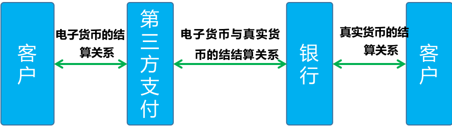

「财务核心」这样学一点都不难
各位同学搭嘎猴，今天我们来学习支付系统搭建中很关键的一课：财务核心。支付本身与货币息息相关，谈及货币就绕不开财务。支付这一行为在古代表现为实物货币的转移，在近代是表现为纸质货币的转移，而在现代进一步表现为电子货币的转移。

接下来我们就开始今天的学习内容吧！
前言
何为支付？
支付是货币债权从付款人向收款人的转移的动作和过程，伴随着清偿商品交换和劳务活动所引起的债权债务关系。由于银行「信用」中介的作用，支付逐步演化为银行客户与客户、银行客户与开户银行之间的资金收付关系，支付成为银行所提供的金融服务业务。

第三方支付并不管理真实货币的从属关系与转移，他提供的支付服务是嫁接在银行服务之上的，是通过充值和提现完成真实货币与电子货币的转换，进而直接管理电子货币的从属关系与转移。
第三方支付参与的支付业务主体有哪些？

支付业务主体的关系图

所以，第三方支付的核心服务包括如下三个方面：
对客户提供电子货币的支付、结算服务
与银行一起完成电子货币与真实货币的转换/清算
协助银行完成客户的真正货币结算

作为独立核算的第三方支付，要为客户提供电子货币的支付、结算服务，那就必须建立独立的电子（虚拟）账户体系，来确保每一个客户的进出资金往来的清晰、准确；
同时为了公司内部业务核算清晰准确的目的，参考银行金额系统的资金核算、会计核算的要求和体系，建立自己的按科目管理的会计核算体系，进而完成相应的账务处理和会计处理，保证客户资金可按类目管理，明确自身各项业务的运行成本与利润计量；
为了保证电子货币与真实货币的转换/清算的准确，必须与银行系统的相关数据进行清算对账，核实双方数据的一致性，建立清算对账体系。


账务系统、会计系统的作用
在上述的核心系统中，每一笔来之业务系统的请求会在账务系统中生成至少一条账务流水记录，或者说明细账记录，同时会计系统中根据业务的需要生成一套或者多套的会计分录流水，账户余额与会计余额一 一对应。
简单说，账务系统是为了提供给外部客户的账务支持使用的，客户查询的账户余额、账务明细都来自账务系统。
会计系统则是为了支付机构内部核算需要和设计的。
所有的备付金银行资金清算和资金结转都需要会计系统的支持，内部客户和外部客户的资金核算管理同样也需要会计系统，所以，账务系统和会计系统是相互依存的，账务系统是会计系统的前置。

账户、内部账户
账户
支付机构的账户主要分为三类，分别为个人账户、企业账户和内部账户；
个人账户是面向个人客户在支付机构内部开立的虚拟的电子货币账户；企业账户是面向企业客户开立的虚拟的电子货币账户，就是前述的外部分户账户。
内部账户是根据支付机构本身的结算需要设立的内部虚拟的电子货币账户，就是前述内部分户账户。
内部客户和内部账户
引进内部客户和内部账户的概念，以此来区分外部客户以及实现内部会计记账的需要。内部客户是由支付机构进行内部管理的客户，例如某付宝，他们内部客户可以设为「某付宝网络技术有限公司 01 」；内部账户是由资金清结算部门（或者财务）开设，仅在某付宝内部根据会计账务需要或其他需要开立的、约定范围内使用的某付宝账户，不能在某付宝前台登录查询和使用。内部账户与内部客户的关系是，所有的内部账户都挂靠在内部客户下面。
建立内部账户的目的是进行会计分录编制和核算，账务核算是基于目前的内部核算账户的，再根据这些内部账户对应的会计科目进行会计核算。根据内部账户的余额方向可以分为：资产类内部账户，负债类内部账户，共同类内部账户。
支付机构的账户会记录两个方面的账务信息：
一、分账户账务信息，也就是分账户，包括该账户当前所有的状态信息，如账号、类型、余额、币种、冻结金额、账户状态、开户时间等；
二、账务流水信息，也就是流水明细，包括该账户自从开户以来所有的变动过程的信息，如：主任于 2018 年 5 月 22 日使用银行卡充值 1000 元，于 2018 年 5 月 23 日又在淘宝上购买了一件商品支付了 350 元，当天又用余额信用卡还款 500 元，在 5 月 24 日发行账户被盗，又打电话给客服，要求进行资金冻结，追回账号后又进行账号解冻。
账务分账户
分户账包括一个账户当前所有状态的信息，拿某付宝的账户来举例，其主要信息如下表：
账号：Account_ID ， 用来唯一标识一个账户的 ID ；长度 20 位
格式说明：2088XX2XXXXXXXX0156
前四位 2088，代表 ** 巴巴 ；
XX2 代表账户类型为个人，XX1 为公司，XX3 位内部；
XXXXXXXX 这 9 位代表账号序列号，156 代表币种为人民币；
目前某付宝账号的前 16 位与该会员 ID 号相同，若中间 9 位代表账号序列用尽，可是使用 XX2 的前两位作为扩展。

账务流水
账务流水包括一个账户所有状态变化的过程信息。是记录当日所发生的每一笔业务的详细信息，按交易发生的时间先后顺序排列，系统对每一笔业务分配一个唯一的流水号作为标识，存放于主机。对于会计系统，交易驱动方式产生的流水号是以一笔交易所产生的一套或者多套会计分录为一个编号。
账务系统对外提供可建立账户（开户）、账户记录、账户信息变更、账户信息查询等一系列的账户服务，主要信息如下表：

账务缓冲记账机制
对于支付机构而言，每日都有大量的账务操作的账户，会存在并发处理的系统瓶颈问题，也就是说实时的更新账户余额可能会不准确，那么就需要一套缓冲记账的处理机制。
缓冲记账是指对于有大量并发账务请求的账户进行特别账务处理，不实时创建账务流水和更新账户余额，记账信息登记在缓冲区，根据设置，定时对一段时间内的一批缓冲账务请求进行汇总记账并更新账户余额。参与缓冲记账的账户在账务请求时系统先将记账信息登记在缓冲区。缓冲记账分为普通定时缓冲记账和日终汇总缓冲记账。
日终汇总缓冲记账主要针对担保中间账户这样超大海量数据请求的账户处理，采用日终汇总一次性记账的方式。一般会在每日凌晨固定时间对担保中间账户的缓冲区中的前一日账务请求进行汇总记账。
普通定时缓冲记账为每隔一定时间（一般 5 分钟）对于当日的缓冲账务操作请求进行汇总记账并更新账户余额。为了保证缓冲区内的账务请求不被遗漏，系统还会在每日凌晨固定时间，对缓冲区总前一日未处理的所有缓冲记账数据进行批量汇总记账并更新账户余额。
这样即使有大批量业务数据的账户，账户余额和账务明细每 5 分钟更新一次，能满足账户查询的需要，也能解决并发引起的系统问题
业务系统发起的 A 到 B 账户转账交易请求为例，账务系统处理的过程与会计系统的关系图：

交易码
作为交易驱动的核心系统，交易码起着至关重要的作用，下面介绍一下各类业务的交易码。

交易代码表

账务系统作用总结
账务系统从本质上和会计科目记账是一致的，只是一个用科目，一个用账户来记录发生的明细。
其主要作用：
记录客户分户账户余额；
记录客户分户账户流水；
交易和会计系统的缓冲，相当于会计系统的一个前置。用于实时记录客户余额的变化。
账务系统的账户流水依据于交易流水生成，会计系统的会计分录流水也是依据交易流水生成。交易流水驱动账务系统的客户分户账户流水，也驱动会计系统的会计记账。
账务系统的账户流水依据于交易流水生成，会计系统的会计分录流水也是依据交易流水生成。交易流水驱动账务系统的客户分户账户流水，也驱动会计系统的会计记账。
账务系统、会计系统和核算对账系统的关系
账务系统主要反应客户分户账户资金变动，记录已经收到或者支付客户的资金变动，会计系统主要反应支付公司内部分账户资金变动，记录待清算银行资金，而核算对账系统主要是反应银行付给支付公司的钱和会计系统记录的数据是否一致。
账务系统主要是记录客户的虚拟账户资金变动和余额变动，是单边的记录客户的资金变动情况，而会计系统主要记录支付公司内部账户的资金变动情况，是通过复式记账方式进行，同时记录并反映客户账和支付公司内部账户的变动关系，也即是说客户充值到支付公司或者从支付公司提现的资金，与支付公司应该收到或者支付给客户的资金是否一致，而后通过和会计系统和对账系统交互，再来看备付金银行应该的资金变动是否一致。其实就是对客户实际银行资金变动、余额和在其在支付公司的外部虚拟分户账户资金和余额变动，以及和支付公司内部账户的流水变动，还有和银行实际资金变动的两两关系。